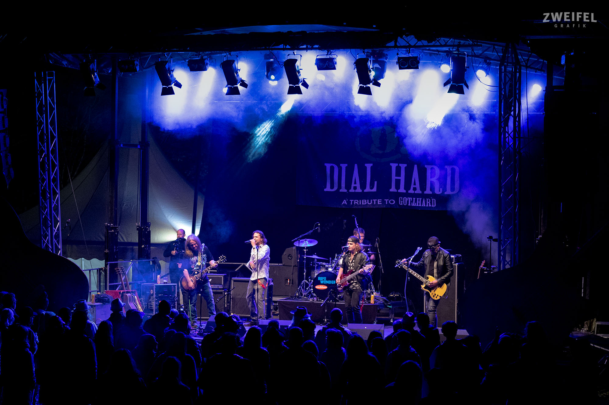

BANDPORTRAIT · 10. NOVEMBER 2026
DIAL HARD – A Tribute to Gotthard
Legendäre Rocksongs, geballte Energie und jede Menge Leidenschaft! DIAL HARD bringt die Musik der Schweizer Rocklegenden GOTTHARD zurück auf die Bühne und sorgt mit kraftvollem Sound und mitreissenden Auftritten für echtes Rockfeeling.

Eine Band, eine Leidenschaft
Sechs leidenschaftliche Musiker haben sich mit DIAL HARD einem gemeinsamen Ziel verschrieben: die Musik von GOTTHARD live erlebbar zu machen. Dabei geht es nicht nur darum, bekannte Songs nachzuspielen, sondern auch darum, die Energie und Begeisterung der Originalband auf das Publikum zu übertragen.
Rockklassiker, die unter die Haut gehen
Von grossen Hymnen bis hin zu weniger bekannten musikalischen Schätzen – DIAL HARD bietet ein abwechslungsreiches Programm für alle, die Schweizer Rockmusik lieben.
Mit markantem Gesang, kraftvollen Gitarrenriffs und einer energiegeladenen Bühnenshow sorgt die Band für eine ordentliche Portion Rock ’n’ Roll.
Die Gesichter hinter DIAL HARD

Chris Schwarz
VOCALS

Föns Oehy
KEYBOARD

Markus Sturzenegger
GUITAR

Roger Kaufmann
GUITAR

Roland Mader
DRUMS

Simon Utzinger
BASS
DIAL HARD live erleben
Ob auf Festivals, in Clubs oder an Open-Airs – DIAL HARD ist auf verschiedenen Bühnen unterwegs.
Nächster angekündigter Auftritt:
14. November 2026 – Ethno Cafe Bar, Schaanwald, Liechtenstein
Weitere Konzerte findet ihr in unserem Eventkalender.
Mehr von DIAL HARD
Du möchtest mehr über die Band erfahren oder wissen, wann sie das nächste Mal auf der Bühne steht?